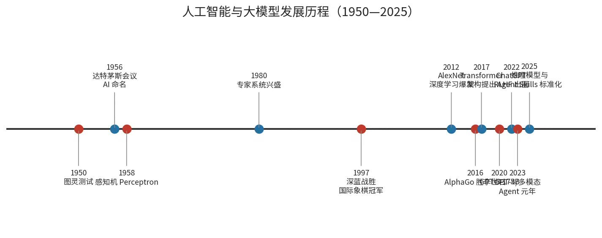
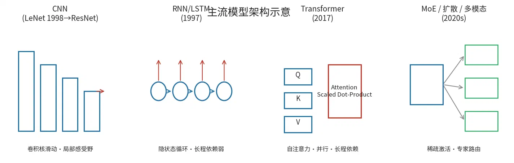

一、人工智能与大模型的发展历程
1.1 总体脉络

| 时期 | 标志事件 | 技术特征 | 参考 |
|---|---|---|---|
| 1950—1956 萌芽 | 图灵测试（1950）；达特茅斯会议（1956），“人工智能"一词诞生 | 符号主义、逻辑推理 | [1] |
| 1957—1980 早期起伏 | 感知机（1958）→ 明斯基批评 → 第一次 AI 寒冬；专家系统 MYCIN/DENDRAL（1970s—80s）兴盛 | 浅层神经网络、知识工程 | [1] |
| 1980—2010 统计学习 | 深蓝战胜国际象棋冠军（1997）；SVM、决策树、概率图模型 | 数据驱动、手工特征 | [1] |
| 2010—2017 深度学习 | AlexNet 夺冠 ImageNet（2012）；ResNet（2015）；AlphaGo 胜李世石（2016） | CNN/RNN 深层网络、GPU 训练 | [1][2] |
| 2017—2020 Transformer 时代 | Vaswani et al. 提出 Transformer（2017）；BERT（2018）；GPT-2/GPT-3（2019/2020，175B 参数） | 自注意力、预训练+微调范式 | [2][3] |
| 2020—2023 大模型爆发 | RLHF 用于 InstructGPT/ChatGPT（2022）；GPT-4 多模态（2023） | 指令对齐、涌现能力、Scaling Law | [3][4] |
| 2023—2025 Agent 化 | 工具调用/函数调用普及；ReAct/Reflexion 范式落地；2025-10 Anthropic 发布 Agent Skills 开放标准；推理模型（o1/R1 类）兴起 | 从"对话"走向"规划—执行—反思"闭环 | [5][6] |
关键转折点：2017 年 Transformer 解决了 RNN 的并行化与长程依赖难题，成为此后一切主流大模型的统一底座 [2]；2022 年 ChatGPT 证明 RLHF 能在大模型尺度上实现指令对齐，直接引爆应用层 [3]；2023 年后研究重心从"更大的模型"部分转向"会用工具的模型”（Agent），规划、记忆、技能外挂成为新焦点 [5][6]。
1.2 主流模型架构

| 架构 | 代表 | 核心机制 | 优势 | 局限 | 适用场景 |
|---|---|---|---|---|---|
| CNN | LeNet(1998)、ResNet(2015) | 卷积核滑动、局部感受野、参数共享 | 空间特征强、样本效率高 | 不擅序列建模 | 图像分类/检测、医疗影像 |
| RNN/LSTM/GRU | LSTM(1997) | 隐状态循环传递 | 天然序列建模 | 梯度消失、难并行 | 早期 NLP、时序信号 |
| Transformer | BERT(2018)、GPT 系列、LLaMA | 自注意力 Scaled Dot-Product，Q/K/V 多头注意力 | 并行训练、长程依赖、可扩展性极佳 | 注意力 O(n²)、推理显存占用高 | 通用语言/多模态大模型底座 [2][3] |
| MoE（混合专家） | Mixtral、Switch Transformer | 稀疏路由激活部分专家 FFN | 参数规模↑计算量不变 | 训练不稳定、负载均衡难 | 超大模型降本推理 [3] |
| 扩散模型 | DDPM、Stable Diffusion | 前向加噪/反向去噪 | 生成质量高、可控 | 采样步数多 | 图像/视频生成 [4] |
| 多模态 VLM | GPT-4V、Qwen-VL、MinerU2.5-Pro | 视觉编码器 + LLM 对齐 | 图文统一理解 | 训练数据要求高 | 文档解析、OCR、图表理解 [7] |
应用版图：对话与内容生成（ChatGPT/Claude/Kimi）、代码生成（Copilot/Cursor/Codex）、文档智能（MinerU 类 PDF 解析）、科研助手（文献检索、对照翻译——即本组案例）、教育与办公自动化。
参考来源：[1] Wikipedia: History of artificial intelligence（知识性综述）；[2] Vaswani et al., Attention Is All You Need, NeurIPS 2017, https://arxiv.org/abs/1706.03762；[3] Zhao et al., A Survey of Large Language Models, https://arxiv.org/pdf/2303.18223；[4] Ho et al., Denoising Diffusion Probabilistic Models, 2020；[7] MinerU 4.x 模型包说明（PP-DocLayoutV2/PP-OCRv6/PP-FormulaNet + VLM），https://github.com/opendatalab/MinerU/releases